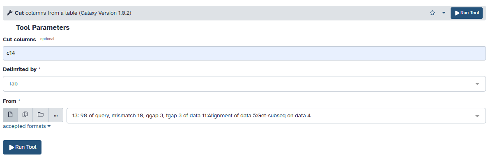
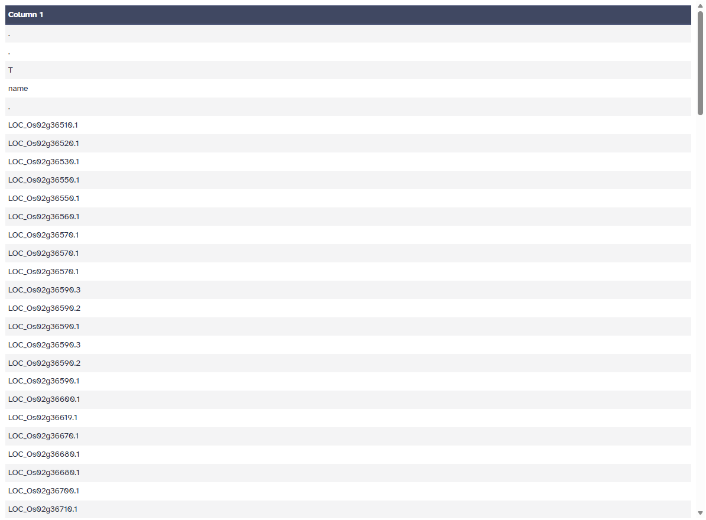
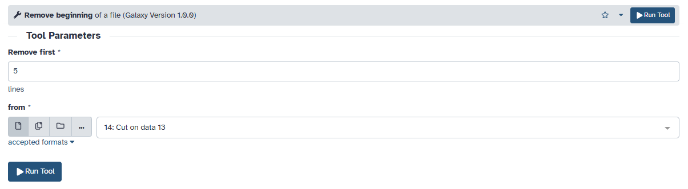
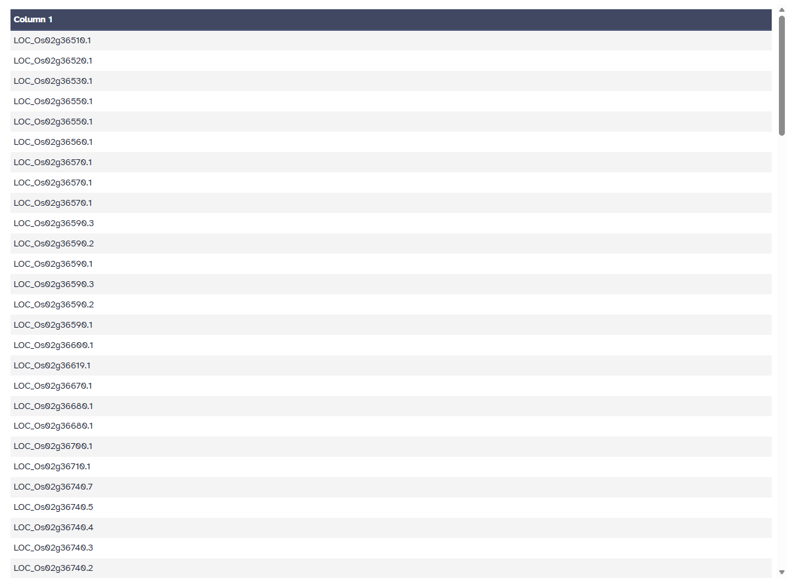
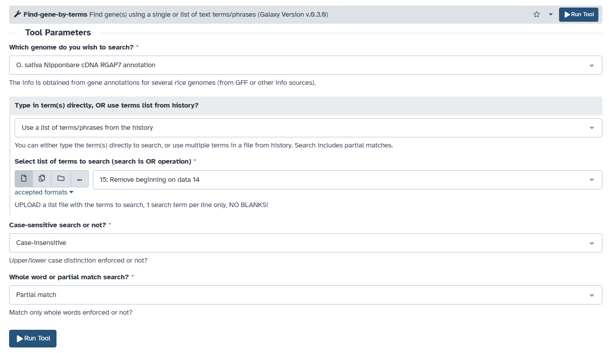
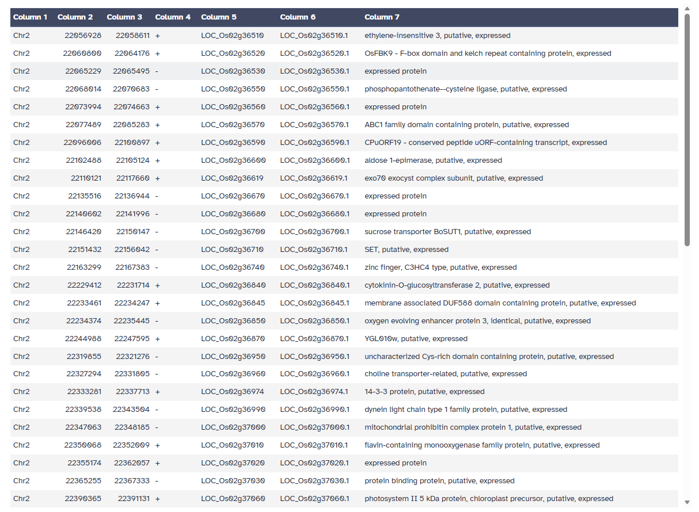

Objective
Learn how to identify candidate genes from a genomic region of interest using CropGalaxy and its integrated tools.
Recap
We generated a gene list and their sequences anchored on N22, an aus-type genome, for the QTL, qDTF2.2. We did this because our donor is closely related to N22. Our goal now is to use available annotations to learn about the putative functions of the genes in our list. We will now begin another series of analysis.
Find-seq
This tool maps genomic regions from a source genome to a target genome using SNP-guided alignment.
- Select Find-seq tool.
- Set parameters:
- Use the sequences derived from Exercise 2
- Select a built-in rice genome/gene database or use a multi-FASTA data from your history? Use a built-in gene database
- Select reference database: N22
- Leave other settings as default
- Once the parameters are set, click Run Tool
- View the results of the Find-seq tool run.


Upon closer look on the output, you will notice that there are a lot of gene duplications and genome rearrangements given the chromosome location of the Nipponbare genes. We will need to filter this using “Blat Alignment Filter”.

Blat Alignment Filter
We will filter out PSL table to get only those whose sequence matches 90% with the Nipponbare gene sequence.
- Search for the Blat Alignment Filter tool.
- Set parameters:
- Input: Use the output from the Find-seq tool run
- Identity cutoff: 90%
- Leave other settings as default
- Once the parameters are set, click Run Tool
- View the results of the Blat Alignment Filter tool run.


Post-processing
We will now extract the genes in column 14 from the output file of the blat filtering process. For this, we will use the Text Manipulation tools.
- Search for the Cut columns from a table tool under Text Manipulation.
- Set parameters:
- Take out column 14 (c14)
- Input: Use the output from the Blat Alignment Filter tool run
- Delimited by: Tab
- Once the parameters are set, click Run Tool
- View the results of the Cut columns tool run.
- Remove the headers and comments using Remove beginning of a file tool
- Set parameters:
- Input: Use the output from the Cut columns tool run
- Remove first: 5
- Once the parameters are set, click Run Tool
- View the results of the Remove beginning of a file tool run.




Find genes by term (using the gene list)
We will now get putative functions information on these genes using an annotation from Nipponbare. To do that, use the “Find-genes-by-terms” tool.
- Search for the Find-genes-by-terms tool under RiceGalaxy: SNP Data tools suite.
- Set parameters:
- Which genome do you wish to search? O. sativa Nipponbare cDNA RGAP7 annotation
- Type in term(s) directly, OR use terms list from history? Use a list of terms/phrases from history
- Input: Use the output from the Remove beginning of a file tool run
- Case-sensitive search or not? Case-insensitive
- Whole word or partial match search? Partial match
- Once the parameters are set, click Run Tool
- View the results of the Find-genes-by-terms tool run.

After running the tool, you should be able to see on column 7 the annotations regarding the putative function of the genes.

Note: You may also use other resources such as RicePilaf, Rice SNPSeek, Rice Gene Index to gain more insight on the function of the genes as well as gene networks.